CLAN production UI — before / after
Real Electron app, real data typed through the UI, 1440×900. Before = the production shell at clan-network-validation; after = clan-production-world-ui. Phone-width captures: after/mobile/; interaction frames: after/interaction/; Reduced/Minimal modes: after/modes/.
Home → My Space
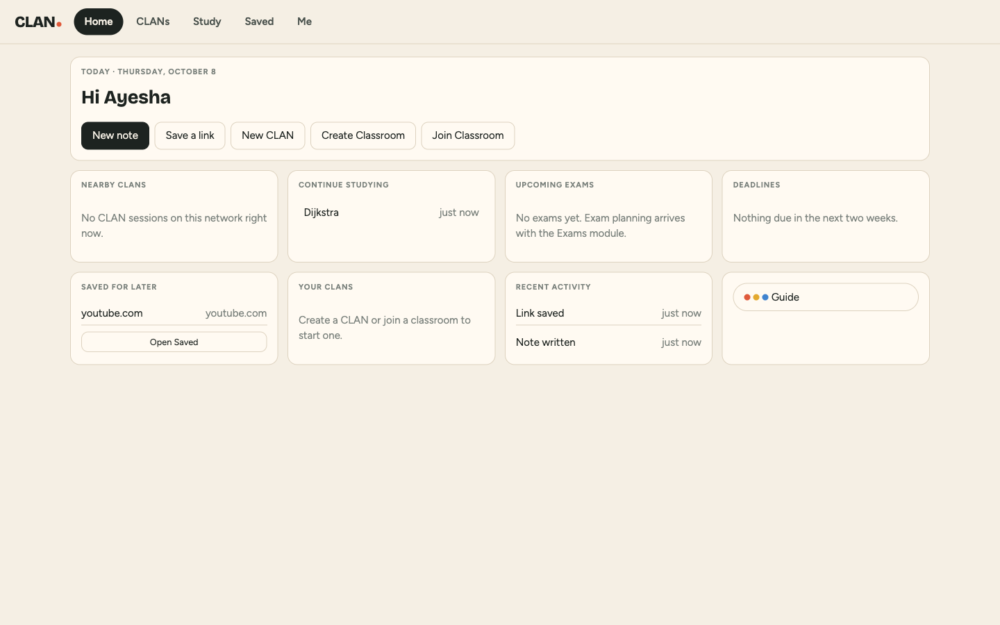
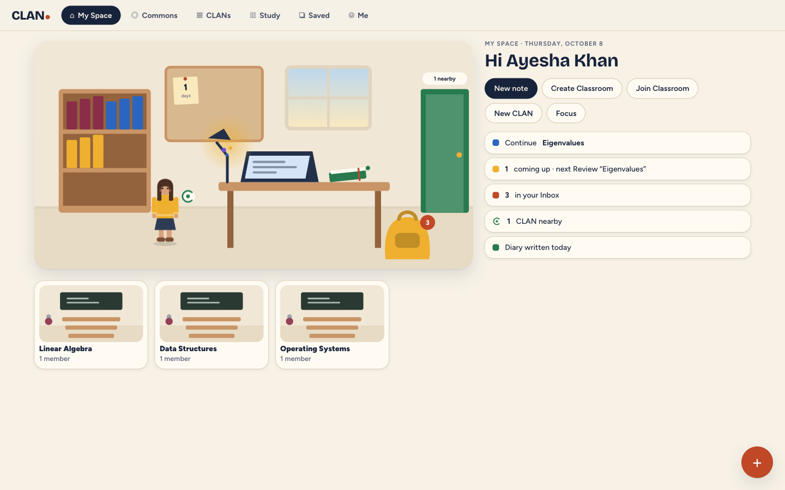
CLANs
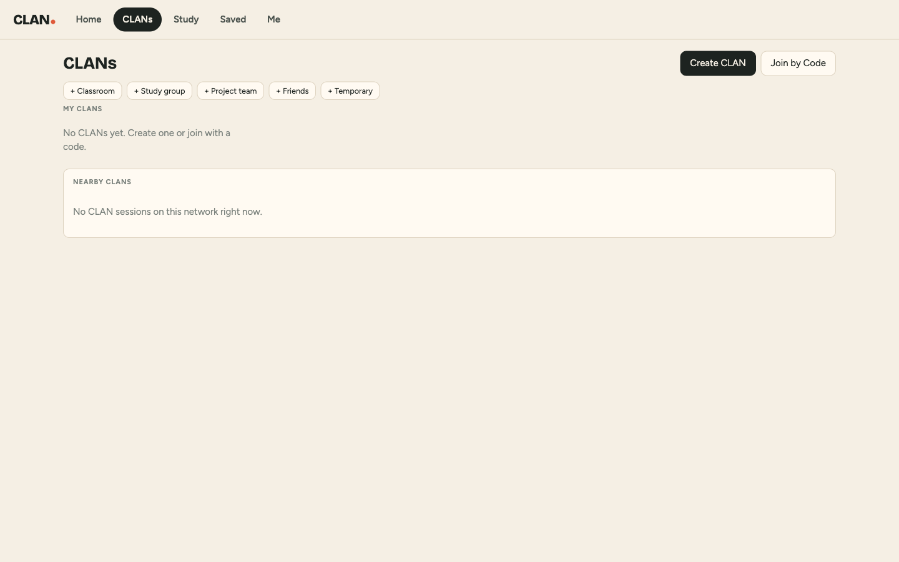
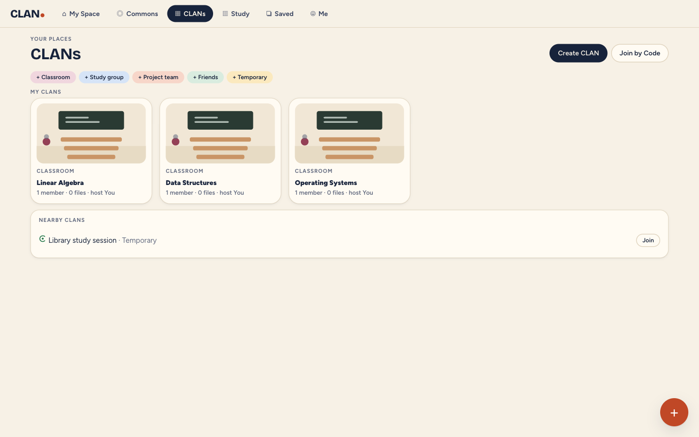
Study → Knowledge Campus
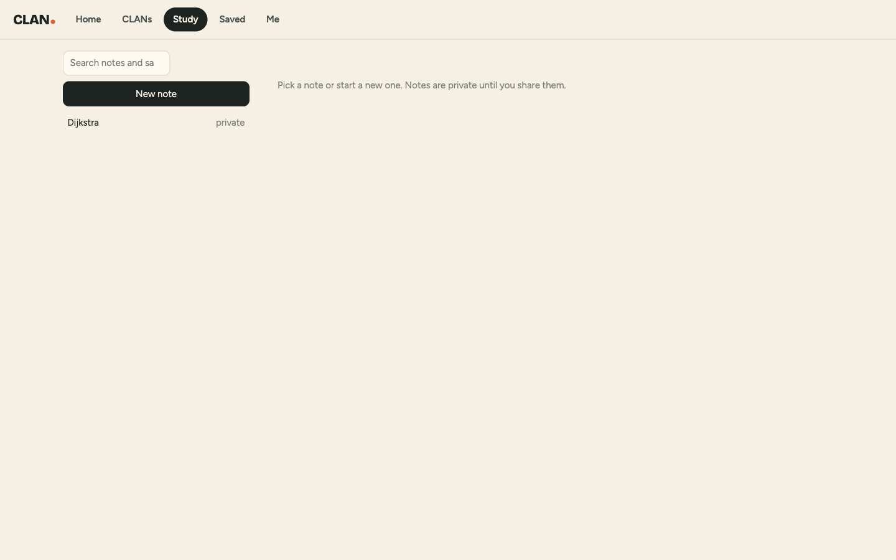
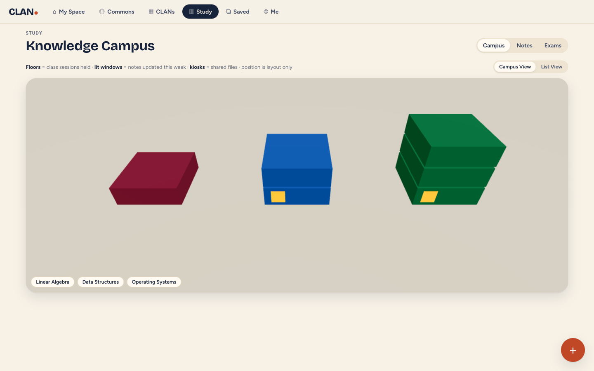
Saved
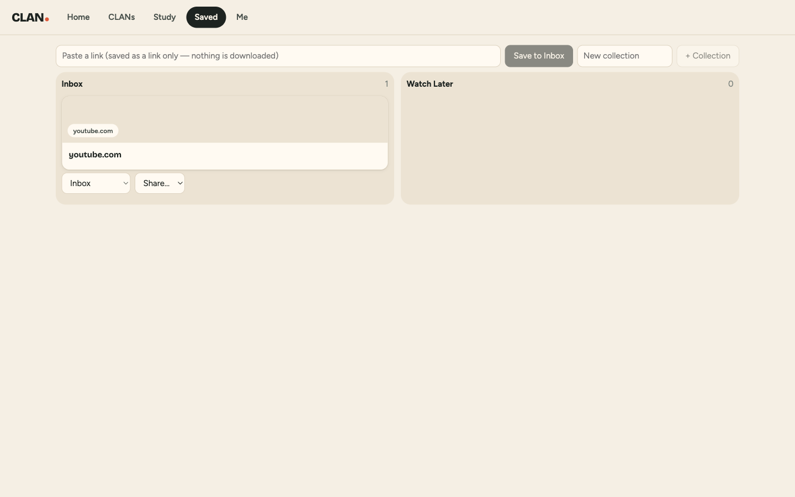
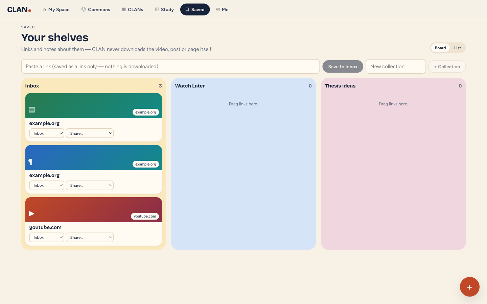
Me / Diary
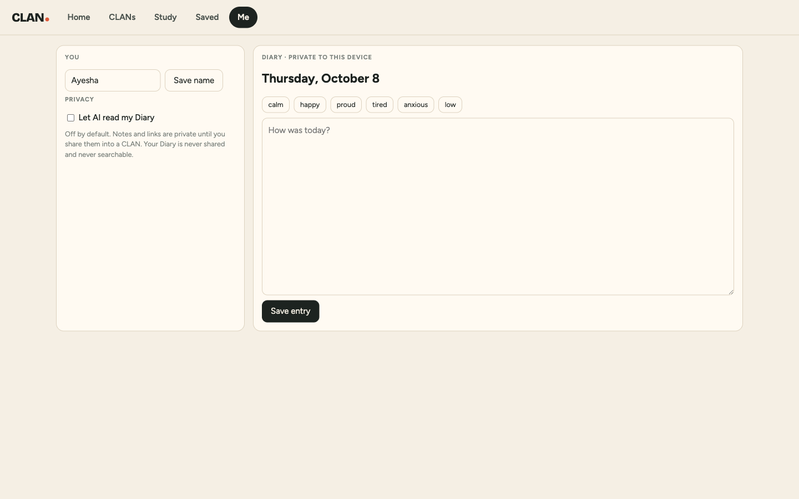
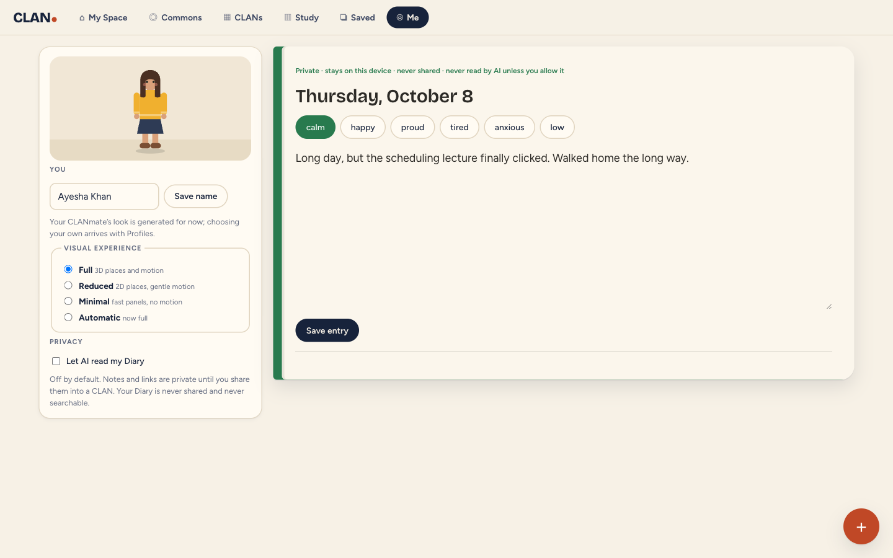
Host session → CLAN room
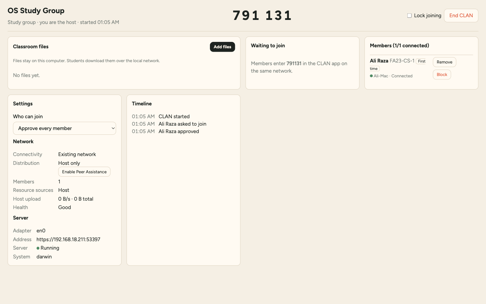
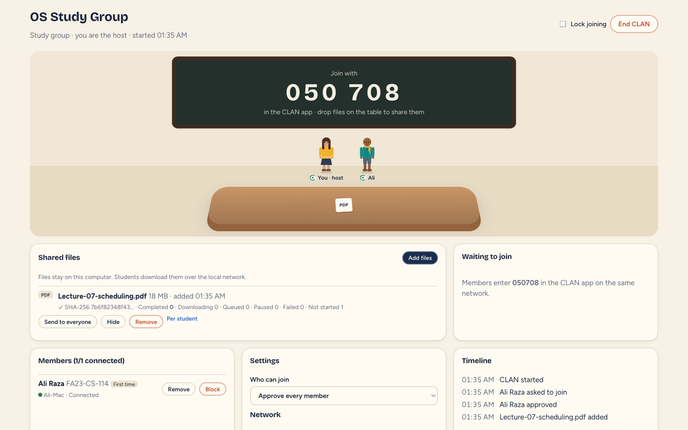
Member session → CLAN room
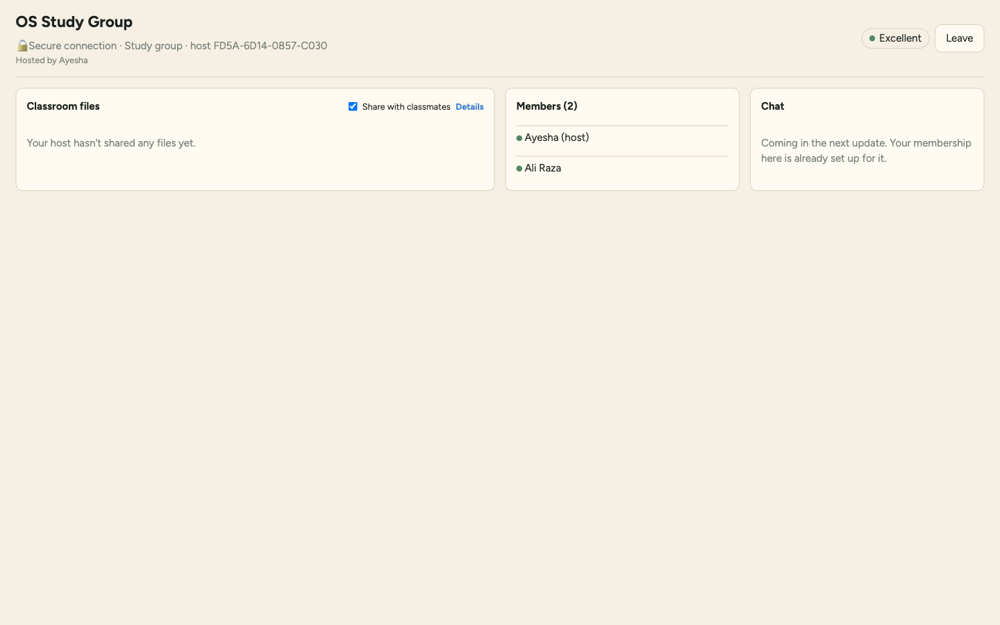
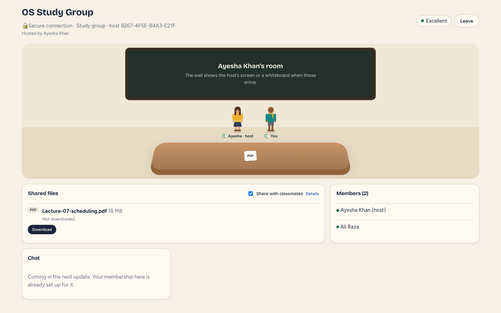